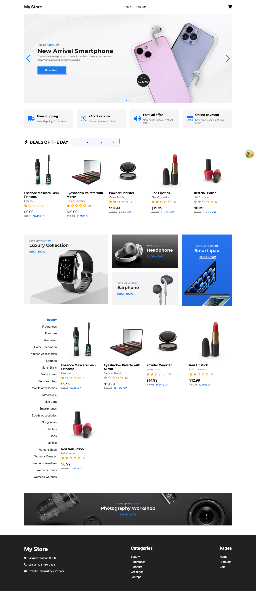
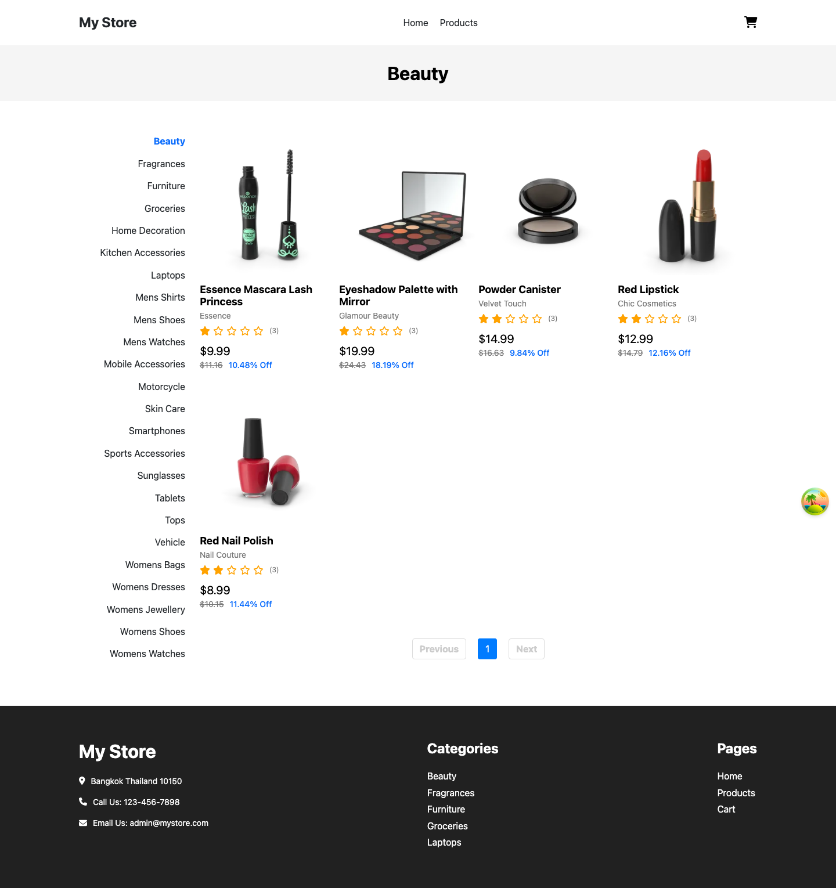
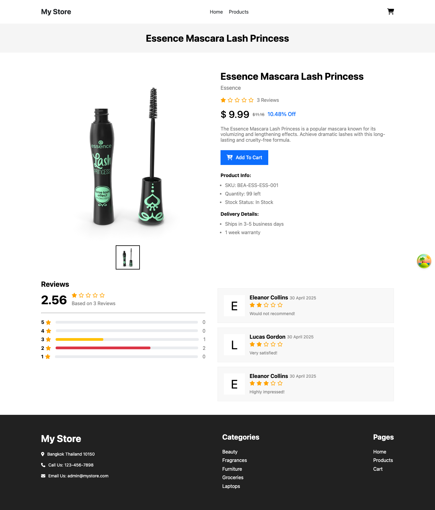
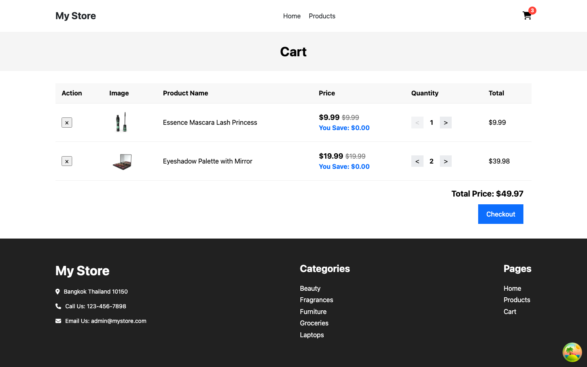
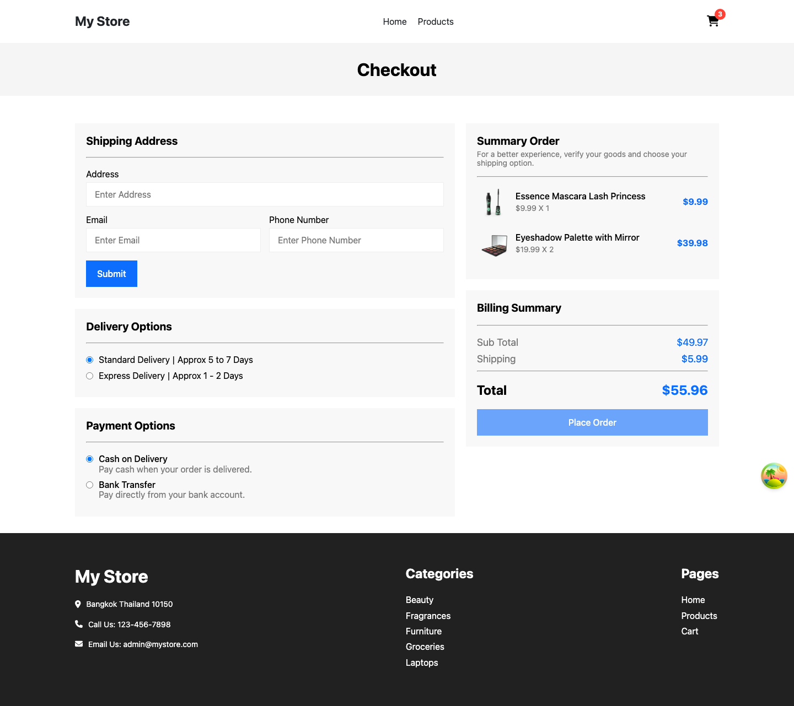

บทเรียน 01 · ปฐมนิเทศ (Orientation)
บทนำ: สัปดาห์นี้เราจะสร้างอะไร
Intro
ใน Week_04 คุณใช้เวลาสร้างพื้นฐาน React ตั้งแต่ component, props, state ไปจนถึง hooks และการทดสอบ — นั่นคือทักษะที่ทำให้คุณ เขียนแอปที่ทำงานได้ สัปดาห์นี้เราจะเติมอีกสองทักษะที่ทำให้คุณ เขียนแอปที่หน้าตาดีและทำงานได้จริงบนหน้าจอทุกขนาด ได้เร็วขึ้นมาก: Tailwind CSS สำหรับจัดสไตล์ และ Cursor เครื่องมือ editor ที่มี AI agent ช่วยเขียนโค้ดให้ โดยมีโปรเจกต์เดียวที่จะพาคุณเดินทางไปจนจบ — เว็บอีคอมเมิร์ซชื่อ My Store
สิ่งที่เราจะสร้างในสัปดาห์นี้
My Store เป็นเว็บขายของออนไลน์แบบเต็มรูปแบบ มี 6 หน้าที่เชื่อมกันเป็น flow การซื้อของจริง ตั้งแต่เปิดเข้ามาดูสินค้าจนถึงยืนยันคำสั่งซื้อ ลองไล่ดูทีละหน้ากัน
หน้า Home คือหน้าแรกที่ลูกค้าเห็น รวมสินค้าแนะนำและทางเข้าไปยังหมวดหมู่ต่าง ๆ

จากหน้า Home ลูกค้ากด เข้าหมวดหมู่ (Category) เพื่อดูสินค้าตามประเภท เช่น beauty, smartphones, groceries พร้อมแบ่งหน้า (pagination) เมื่อสินค้ามีเยอะ

กดเข้าไปที่สินค้าชิ้นใดชิ้นหนึ่งจะเจอหน้า Product Detail ที่มีรูปสินค้า ราคา คำอธิบาย และ รีวิวจากลูกค้าคนอื่น — ข้อมูลทั้งหมดนี้ดึงมาจาก API จริง ไม่ใช่ข้อมูลปลอมที่เขียนตายตัวไว้ในโค้ด

กด “เพิ่มลงตะกร้า” แล้วไปที่หน้า Cart สินค้าที่เพิ่มไว้จะยังอยู่ครบแม้ปิดแท็บแล้วเปิดใหม่ เพราะตะกร้าถูกเก็บไว้ใน localStorage ของเบราว์เซอร์

ขั้นตอนสุดท้ายคือหน้า Checkout ให้เลือกวิธีจัดส่งและวิธีชำระเงิน (เป็นการจำลอง ไม่มีการตัดเงินจริง) เมื่อกดยืนยันจะพาไปหน้า Order Success ที่สรุปคำสั่งซื้อ — สองหน้านี้คุณจะได้ลงมือสร้างเองในบทที่ 19

นี่คือหน้าตาปลายทางที่คุณจะสร้างขึ้นเองทีละหน้าตลอดสัปดาห์นี้ โดยอ้างอิงจาก reference repo ที่ทีมงานเตรียมไว้ให้แล้ว — github.com/manjarb/varis-lab-project-06-react-ecommerce-app
สิ่งที่จะได้เรียน
ตลอดสัปดาห์นี้ เราจะฝึกสี่ทักษะหลักซ้ำ ๆ จนกลายเป็นความเคยชิน
- แปลง screenshot เป็น prompt
- ใช้ Cursor Agent สร้าง UI
- ตรวจทานโค้ด Tailwind
- refactor เป็น component
วงจรการทำงานของสัปดาห์นี้: Prompt → Generate → Review → Refactor
สังเกตว่าสี่ข้อด้านบนไม่ใช่รายการทักษะที่แยกจากกัน แต่มันคือ วงจรเดียวกัน ที่เราจะวนซ้ำในทุกหน้าที่สร้าง: ดู screenshot ต้นแบบแล้วเขียน prompt บอก Agent ว่าต้องการอะไร ปล่อยให้ Agent generate โค้ดออกมา จากนั้น review สิ่งที่มันสร้างอย่างละเอียด — ดู responsive ดู accessibility ดูว่าโครงสร้างสมเหตุสมผลไหม แล้วค่อย refactor ส่วนที่ควรแยกเป็น component ที่ใช้ซ้ำได้
🚨 ข้อความที่สำคัญที่สุดของสัปดาห์นี้: โค้ดที่ AI สร้างให้คือ first draft เท่านั้น ไม่ใช่ผลงานสุดท้าย Agent เขียนโค้ดได้เร็วมาก แต่มันไม่รู้ว่าโปรเจกต์ของคุณมีธรรมเนียมการตั้งชื่ออะไร ไม่รู้ว่า component ไหนควรใช้ซ้ำ และบางครั้งก็ลืมทำ responsive หรือ accessibility ให้ครบ คุณคือวิศวกรที่ต้องรับผิดชอบโค้ดที่ ship ออกไปจริง ไม่ใช่ Agent — บทเรียน 11–13 จะสอนวิธีตรวจทานโค้ดที่ AI สร้างอย่างเป็นระบบ
เตรียมเครื่องมือ
ก่อนเริ่มบทเรียนถัดไป เตรียมสิ่งเหล่านี้ให้พร้อม
- ติดตั้ง Cursor จาก cursor.com — เวอร์ชันฟรี (free tier) เพียงพอสำหรับหลักสูตรนี้ทั้งหมด
- Node.js เวอร์ชัน 22 ขึ้นไป ตรวจสอบด้วย
node -v - เปิดดู reference repo ที่ github.com/manjarb/varis-lab-project-06-react-ecommerce-app ไว้เป็นเป้าหมายปลายทาง — ไม่ต้อง clone ตอนนี้ก็ได้ แค่เปิดดูโครงสร้างคร่าว ๆ
แผนที่บทเรียน
หลักสูตรสัปดาห์นี้แบ่งเป็น 6 บทใหญ่ เรียงกันเป็นเส้นทางเดียว จากปูพื้นฐานไปจนถึงสร้างแอปจริงครบทุกหน้า
| บท | เนื้อหา |
|---|---|
| 1. ปฐมนิเทศ | ภาพรวมสัปดาห์นี้ (บทที่คุณกำลังอ่านอยู่) |
| 2. Tailwind CSS พื้นฐาน | utility-first, การติดตั้ง Tailwind v4, utility หลัก, responsive, states และ design tokens |
| 3. Cursor Workflow | รู้จัก Cursor Agent และวิธีแปลง screenshot เป็น prompt ที่ใช้งานได้จริง |
| 4. เริ่มสร้างโปรเจกต์ | ตั้งโครงโปรเจกต์ My Store และให้ Agent สร้าง layout แรก |
| 5. ตรวจทานโค้ดที่ AI สร้าง | เช็กลิสต์ตรวจ responsive, accessibility และ maintainability ของโค้ดจาก AI |
| 6. สร้างแอปทีละหน้า | ใช้วงจร prompt → generate → review → refactor สร้างทุกหน้าของ My Store จนจบ |
พร้อมแล้วก็ไปทำความรู้จักแนวคิดที่เป็นหัวใจของ Tailwind กันเลย — utility-first